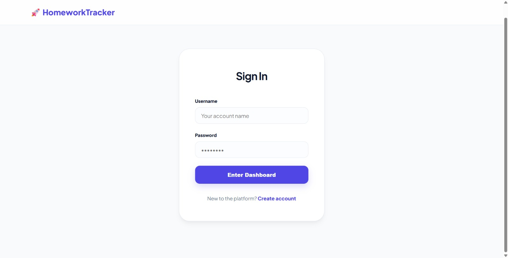
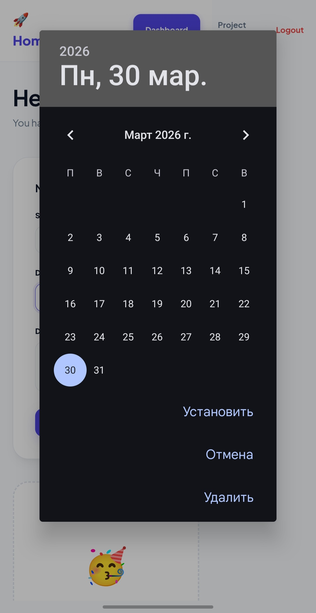
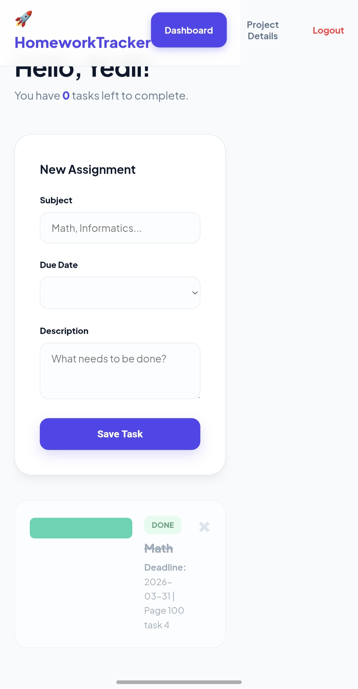

A high-performance digital environment designed by students for ultimate productivity and deadline management.
HomeworkTracker was born from a simple observation: existing platforms are built for teachers, not students. We needed a tool that prioritizes the user's workload over administrative data.
This system bridges the gap between chaotic physical planners and overly complex corporate software, providing a streamlined "Success Hub" for every student.
With an average of 12 subjects per term, tracking individual task requirements is a nightmare. Information gets lost in chats and emails.
The Fix: A persistent web-based dashboard accessible from any school device, keeping your priorities visible at all times.
Click any image below to expand and see the technical details of our interface.





Efficiency Stats:
• 4 Weeks to Build
• 100% Mobile Ready